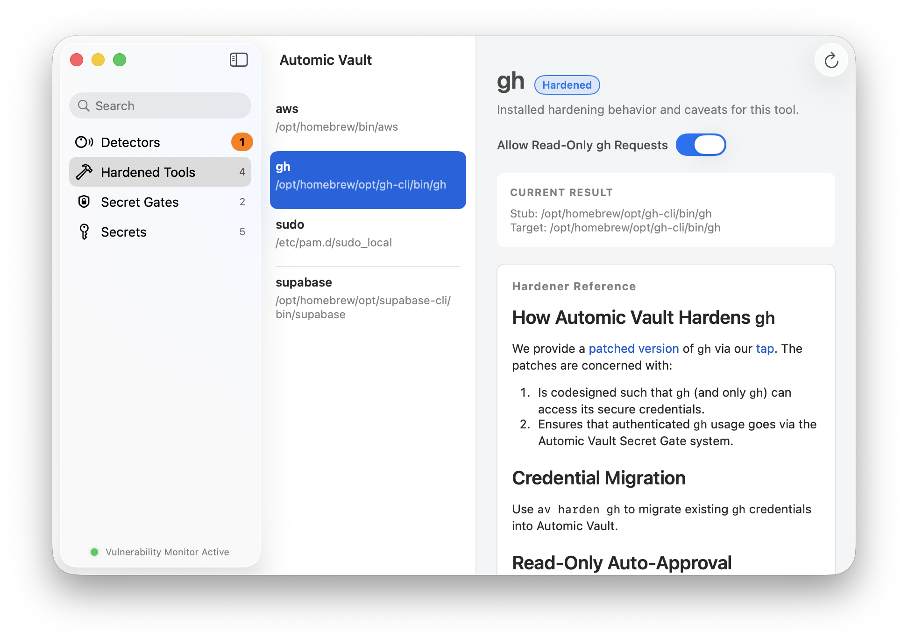

- 01Encrypts plaintext secrets for all CLI tools.
- 02Human in the loop for all authenticated tool use
- 03Security at the layer that counts: the packaging layer
No more plaintext secrets
“Helpful” agents take dangerous shortcuts.
SECRET EXFILTRATED
A reusable cloud credential just crossed the trust boundary.
Automic Vault detects and encrypts every plaintext secret exposed by your development stack
Encrypting secrets is not enough
The tool should have to ask.
Automic Vault keeps the credential out of the agent’s context. The request stops at a native approval gate where you can inspect the command and approve it once—or deny it.



Granular access per tool consumer
Every secret use is restricted by default. Relax the gate only for the code-signed executable you name.
- Read only
- Auto-approve safe
ghqueries without granting write access. - Full access
- Always approve direct
ghaccess only for a named calling app, such as Terminal.app.
Every secret use is logged.
Approved or denied, automatic or manual: every request leaves a local record with the launcher, key, command, working directory, and decision.
- Decision
- Launcher
- Requested key
- Working directory


Monitor Threats to your developer environment
Automic Vault monitors developer tools across all ecosystems. New threats are flagged instantly, with clear steps to mitigate each finding.